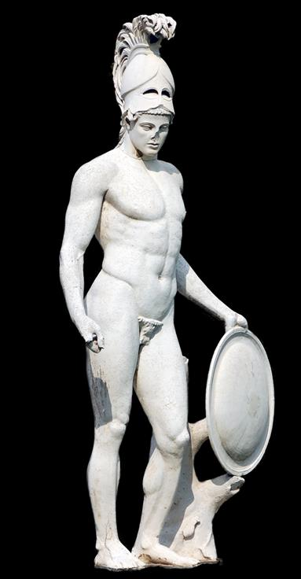
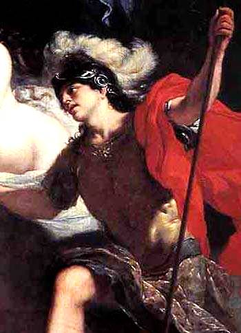

Thần chiến tranh-Arès, con của Zeus và Héra, là một trong mười hai vị thần tối cao của thế giới Olympe, xem ra không được thế giới thần linh tôn trọng, quý mến. Còn đối với thế giới loài người thì Arès cũng chẳng được mấy ai tôn thờ, sùng kính. Vì một lẽ đơn giản: chẳng mấy ai thích chiến tranh. Là vị thần của chiến tranh và những trận giao chiến cho nên tính khí của Arès rất nóng nảy và hung bạo.

Hơi bất bình một chút là mắt quắc lên, thét ầm ầm, rút gươm ngay ra khỏi vỏ. Nghe đâu có chuyện xích mích, xô xát, xung đột là Arès lao tới ngay. Do tính khí hung hăng, ngỗ ngược như thế nên thần Zeus chẳng yêu mến gì Arès, dù là con dứt ruột đẻ ra; Zeus, thậm chí lại rất ghét Arès, coi Arès là đứa ghê tởm nhất, hư hỏng nhất, là đồ phá hoại. Zeus đã từng nói với Arès nếu như Arès không phải là con của Zeus thì Zeus đã quẳng xuống địa ngục Tartare từ lâu rồi. Còn Arès, tuy bị mọi người chẳng ưa thích nhưng chứng nào vẫn tật ấy, không sao chừa được niềm vui thích được tắm mình trong những trận giao tranh đẫm máu, được nghe tiếng hò hét, rên la, kêu khóc hòa trộn với tiếng binh khí va vào nhau loảng xoảng, được ngắm cảnh con người điên cuồng lao vào nhau đâm, chém, máu chảy thành sông, thây chất thành núi.

Arès lúc nào cũng đầu đội mũ trụ, mình mặc áo giáp, kiếm đeo bên sườn, khiên che trước ngực. Lao vào cuộc hỗn chiến bạo tàn. Thần Arès hét lên những tiếng khoái trá. Theo sau Arès là hai con trai: Déimos (Terreur) và Phobos (Crainte) tức thần Khủng khiếp và Kinh hoàng, càng làm cho những cuộc giao tranh thêm muôn phần ác liệt và thảm thương. Lại thêm nữ thần Éris, vị nữ thần Bất hòa thường châm ngòi cho các cuộc chiến tranh, nữ thần Ényo (thần thoại La Mã: Bellone) mà niềm sướng vui là được thưởng ngoạn cảnh đầu rơi, máu chảy, được nghe tiếng rên la của chiến binh tử thương, hộ tống, càng làm cho Arès cuồng chiến hơn nữa. Arès tả xung hữu đột, lưỡi gươm vung lên loang loáng, hạ hết địch thủ này đến địch thủ khác, khiên giáp thấm đỏ máu người. Càng đánh càng hăng, Arès càng thêm phần tàn bạo, trái tim rắn như sắt, cứng như đồng, chẳng hề mủi lòng xót thương trước cảnh bao sinh linh phải từ giã cuộc đời ấm cúng bên vợ con, cha mẹ.
Tuy là thần Chiến tranh, tính khí hung hăng, tàn bạo song Arès không phải là vị thần võ nghệ cao cường, đánh đâu thắng đấy. Tính cuồng chiến và thói ngang ngược với tài thao lược và óc cơ mưu là hai chuyện khác nhau. Vì lẽ đó vị thần Chiến tranh đã từng một đôi lần được nếm cái mùi vị không dịu ngọt chút nào của chiến tranh.
Trong những trận giao tranh ở chân thành Troie, Arès giúp quân Troie đánh lại quân Hy Lạp. Biết bao dũng sĩ ưu tú của quân Hy Lạp phải gục ngã dưới ngọn lao, lưỡi kiếm bạo tàn của Arès. Nhưng quân Hy Lạp không vì thế mà nao núng. Dũng tướng Diomède xuất trận đương đầu với thần Arès. Gặp địch thủ, Arès hét lên và phóng luôn ngọn lao đồng. Ngọn lao bay đi, bay vèo đi, không trúng người Diomède vì nữ thần Athéna đã lái ngọn lao bay chệch đích và quay ngoắt xe ngựa của Diomède sang một bên để tránh đòn ác hiểm. Diomède thoát chết, phóng lao đánh trả. Ngọn lao đồng xé gió bay đi và nhờ sự điều khiển của nữ thần Athéna, lao xuyên ngay vào bụng, chỗ dưới thắt lưng của thần Arès. Arès rú lên một tiếng kinh hoàng. Tiếng rú tưởng như long trời chuyển đất có dễ đến hàng nghìn chiến binh hai bên hét cũng không dữ dội bằng. Một cơn gió lốc cuốn cát bụi mù mịt cao lên đến tận trời xanh. Arès bị thương, đau quá, phải trở về thế giới Olympe. Arès tâu với thần Zeus rằng nữ thần Athéna đã giúp một người trần, một người trần to gan đánh lại cả con của thần Zeus, khiến cho nó bị thương đau đớn đến thế này. Nhưng thần Zeus vốn không ưa Arès nên chẳng những không bênh vực mà lại còn mắng cho Arès một trận tối tăm cả mặt mũi.
Vợ của thần Arès là nữ thần Tình yêu và Sắc đẹp Aphrodite cũng bị dũng tướng Diomède phóng lao vào cánh tay, làm bị thương, đến nỗi Aphrodite đang bế đứa con trên tay, rùng mình một cái buông rơi con xuống đất. May thay có thần Apollon đến cứu giúp nếu không thì chưa biết sự thể sẽ ra thế nào. Lúc này Arès bị thương. Thần phải cho vợ mượn ngựa để bay về trời cứu giúp.
Xem thế thì thần Arès không phải giỏi giang “côn quyền hơn sức, lược thao gồm tài” gì!